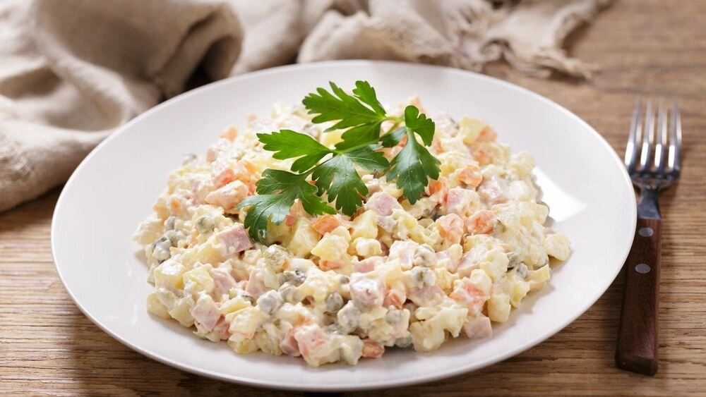

ОЛИВЬЕ
Оливье́ — закусочный салат русской кухни из отварных корнеплодов, солёных огурцов, яиц с мясом или варёной колбасой в майонезной заправке. По распространённой версии, носит имя автора рецепта — французского шеф-повара Люсьена Оливье (1838—1883) и воспринимается в России как французское блюдо, в то время как за пределами ближнего зарубежья он в разных вариациях известен как «русский салат». Современный салат оливье имеет мало общего с блюдом, созданным Оливье полтора века назад, в котором присутствовали пернатая дичь, телячий язык, раковые шейки и паюсная икра, и является адаптацией адаптации оригинала.
Происхождение значимой реалии русской гастрономической культуры окутано целым рядом тайн, подверглось мифологизации и насчитывает несколько версий. Общепринятая история салата оливье начинается с его изобретателя, знаменитого в Москве шеф-повара Люсьена Оливье, о котором первым написал в «Москве и москвичах» В. А. Гиляровский. Московским гурмэ без его французского салата был «обед не в обед», но повар хранил свой рецепт, как минимум, салатной заправки, в строжайшей тайне. Салат французского повара, по версии Гиляровского, стал фирменным блюдом «Эрмитажа» и позднее распространился по московским трактирам. Из записей Е. П. Иванова известно, что официантов в Москве набирали в основном из ярославцев, некоторым из них не сразу давались названия блюд сложной ресторанной кухни, и салат оливье они называли «ливелье». У Тестова оливье подавали на закуску к зубровке.
Рецепт
Для приготовления данного продукта понадобятся эти продукты:
- Картофель - 5 шт.
- Морковь - 1 шт. (крупная)
- Огурцы солёные (бочковые) - 4-5 шт.
- Горошек зеленый консервированный - 5-6 ст. л.
- Колбаса вареная (докторская) - 200 г.
- Яйца - 4 шт.
- Майонез - 150 г.
- Сметана - 50 г.
- Соль - по вкусу
- Перец черный молотый - по вкусу
- Шаг 1
- Подготовьте все необходимые продукты для оливье.Картофель и морковь отварите в кожуре (20-25 минут; готовность овощей проверяйте ножом или вилкой), остудите. Яйца сварите вкрутую (8-9 минут после закипания), остудите в холодной воде.
- Шаг 2
- Картофель и морковь очистите. Нарежьте соленые огурцы. Выложите их на дно глубокой миски. На огурцы выложите консервированный горошек. Нарежьте вареную колбасу мелкими кубиками, добавьте в миску с огурцами и горошком. Морковь нарежьте мелкими кубиками, добавьте в миску. Картофель нарежьте мелкими кубиками и добавьте к остальным ингредиентам салата "Оливье". Яйца нарубите мелким кубиком, добавьте в салат с колбасой, горошком и овощами.
- Шаг 3
- Заправьте оливье майонезом, смешанным со сметаной. Посолите, поперчите. Перемешайте салат и дайте ему несколько минут настояться. Салат "Оливье" подавайте сразу же после добавления майонеза и сметаны. Или заправляйте оливье непосредственно перед подачей.Приятного аппетита!
——————

СЕЛДЬ ПОД ШУБОЙ
Сельдь под шубой» — слоёный закусочный салат из филе солёной сельди с отварными корнеплодами и яйцом под майонезом в русской кухне и кухнях бывшего СССР. Кулинарный артефакт советской кухни позднего периода получил распространение в 1970-х годах, став праздничным блюдом и атрибутом новогоднего стола наряду с салатом оливье. Похожие салаты под названием «селёдочный», как слоёные, так и смешанные, с середины XIX века известны в скандинавской и немецкой кухнях.
Сельдь под шубой существует в огромном количестве рецептов, в том числе с сыром, грибами и яблоками.В базовый рецепт салата входят нарезанная кусочками сельдь предпочтительно пряного посола, мелко нарезанный репчатый лук, натёртые на крупной тёрке картофель, морковь, свёкла. Очень солёную сельдь предварительно вымачивают в крепком чае или молоке. Подготовленные продукты выкладывают на большие плоские блюда или в глубокие салатницы отдельными слоями друг на друга: сельдь, картофель, майонез, репчатый лук, морковь, опять майонез, яйцо, свёкла и ещё раз майонез. Последовательность выкладки может меняться, но нижним слоем всегда должна быть сельдь, а верхним — свёкла. Если в салате несколько слоёв сельди, он именуется «сельдь под боярской шубой». Вегетарианский вариант салата содержит морскую капусту вместо сельди. Салат должен настояться, чтобы пропитаться селёдочным ароматом, перед подачей его украшают измельчённым укропом, крошкой яичного желтка или тёртым яичным белком.
Рецепт
Для приготовления данного продукта понадобятся эти продукты:
- Сельдь (филе) - 300 г.
- Свекла (крупная) - 1 шт. (400 г.)
- Картофель - 4 шт.
- Морковь - 2 шт.
- Лук белый салатный - 1 шт.
- Майонез - 100 г.
- Соль (по желанию) - по вкусу
- Шаг 1
- Подготовьте необходимые продукты для салата. Овощи хорошо вымойте. Отделите филе сельди от кожи и костей. В большой казан положите картофель и морковь, залейте водой и отварите овощи до готовности (примерно 20 минут; готовность овощей проверяйте ножом или вилкой).Отдельно в маленький казан положите свеклу, залейте водой и варите до готовности (в зависимости от размера свеклы это может занять около 50 минут; время от времени подливайте воду). Пока овощи варятся, нарежьте филе сельди мелкими кубиками. Салатный лук нарежьте очень мелко.
- Шаг 2
- Готовые овощи - картофель и морковь - очистите от кожуры, натрите на крупной терке. (Свекла пока еще варится.) В подходящую посуду для слоеного салата "Селёдка под шубой" первым слоем выкладываем натертый картофель (немного картофеля оставляем). Щедро посыпаем его нарезанным луком. Смазываем майонезом.
- Шаг 3
- На слой картофеля с луком выкладываем нарезанную селёдку. На сельдь выкладываем еще один тонкий слой картофеля, смазываем майонезом.(Если будете готовить не совсем классический вариант салата "Селёдка под шубой", то на данном этапе картофель можно заменить слоем отварного яичного белка или натертого твердого сыра.)На второй слой картофеля выкладываем слой натертой моркови, слегка смазываем майонезом.
- Шаг 4
- К этому времени должна свариться свекла. Остужаем ее (в холодной воде), очищаем и натираем на крупной терке. Последним слоем салата выкладываем свёклу и смазываем майонезом. Накрываем салат "Сельдь под шубой" пищевой пленкой и даем салату пропитаться (оставляем в холодильнике на несколько часов).Приятного аппетита!
——————
ВИНЕГРЕТ
Винегре́т — холодное блюдо русской кухни, закуска, разновидность салата, обязательным ингредиентом которого в современной кулинарии является отварная или печёная свёкла. Наряду с оливье являлся традиционным салатом советской кухни, уступая ему в благородности и праздничности.
Основной рецепт винегрета — овощной, помимо свёклы для него требуются отварные морковь и картофель, зелёный или репчатый лук, квашеная капуста или солёные огурцы. Нарезанную свёклу перед смешиванием с другими нарезанными овощами заправляют отдельно растительным маслом для сохранения окраски. В зависимости от рецепта в винегрет также добавляют свежие или маринованные помидоры, зелёный консервированный горошек. На основе овощного винегрета готовят мясные, грибные и рыбные варианты. Для мясного винегрета подходят отварное или жареное мясо, консервированное мясо, птица, кролик. В грибной винегрет идут солёные и маринованные грибы, в рыбный — соответственно отварная, припущенная и копчёная рыба, балык, свежая и солёная сельдь, разделанная на чистое филе, кальмары, мидии и морская капуста.
Рецепт
Для приготовления данного продукта понадобятся эти продукты:
- Свекла - 300 г.
- Морковь - 150 г.
- Картофель - 150 г.
- Горошек замороженный - 150 г.
- Лук салатный белый - 100 г.
- Сок лимона - 4-5 ч. ложек
- Соль - 0,25 ч. ложки
- Растительное масло - 4-5 ст. ложек
- Шаг 1
- Свеклу вымыть, отварить в кожуре 30-40 минут. Остудить, очистить и нарезать мелкими кубиками (сторона 0,5 см). Картофель вымыть, отварить в мундире. Остудить, очистить и нарезать такими же мелкими кубиками. Морковь вымыть, отварить в кожуре 20-30 минут. Очистить и нарезать мелкими кубиками.
- Шаг 2
- Вскипятить воду. Горошек опустить в кипяток, довести до кипения и варить 2-3 минуты. Воду слить. Лук очистить и мелко нарезать.
- Шаг 3
- Смешать свеклу, морковь, картофель, горошек и лук. Выдавить лимонный сок. Добавить в винегрет с горошком соль и растительное масло. Перемешать. Выдержать винегрет с горошком в холодильнике 2-3 часа. Подавать холодным.